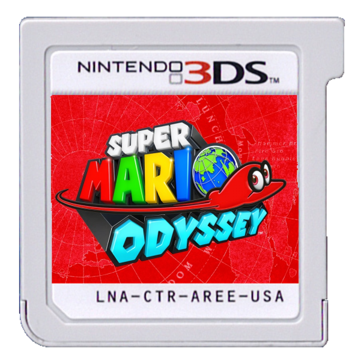

Super Mario Odyssey 3DS
This is a Fan-Remake of Super Mario Odyssey, and NOT related to Nintendo in any way.
Get Involved!How do i get the game?
There are two Options!

Buy a Cartrige
- You dont need a Homebrewed 3DS
- You Support the Developers
- You have a Physical Copy with Case
- You can't get Pesky updates
- The cartrige can Break
- You can Loose the Cartriges
- You can't mod the game
- You can't get updates & Gameplay improvements
- You can't loose the Cartrige
- Can not break
- The Pure ROM is Free (unless you want to support the Devs)
- Autoupdates the Rom so no bugs will crash your Experience
- You need a hacked 3DS
- Can not break
- You could be sad because you don't have something "Special" to show off
- You can get annoyed by updates